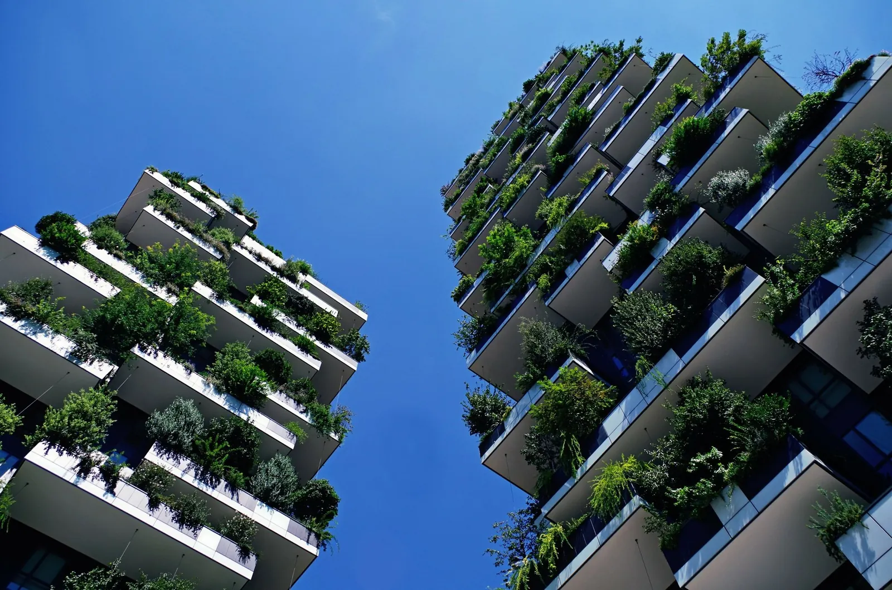

Come arrivare al Tocq Hotel Milano, Porta Garibaldi
Dal treno, a piedi.
La stazione di Porta Garibaldi è a 200 metri: treni, Malpensa Express, metro M2 e M5. Da qui tutta Milano.

Come arrivo da…
Quattro modi di arrivare.
- Malpensa · 49 kmMalpensa Express fino a Porta Garibaldi, circa 40 minuti, poi 5 minuti a piedi.
- Milano Centrale · 1,5 kmMetro M2 verde, due fermate fino a Garibaldi. Oppure 20 minuti a piedi.
- Linate · 9 kmTaxi, circa 20 minuti. In metro: percorso da confermare.
- In autoGarage convenzionato a 50 metri, 25 € al giorno.
Da qui a dove devi andare
Le distanze, con i mezzi veri.
| Destinazione | Perché ci vai | Come | Tempo |
|---|---|---|---|
| Piazza Gae Aulenti · Porta Nuova | Uffici e sedi aziendali | A piedi, 270 m | 3 min |
| Stazione di Porta Garibaldi | Treni regionali, passante, alta velocità | A piedi, 390 m (metro: 270 m) | 5 min |
| Milano Centrale | Alta velocità, aeroporti | 1,5 km · metro M2 o a piedi | 10 min |
| Malpensa · 49 km | Voli, anche all'alba | Malpensa Express da Garibaldi | 45 min |
| Linate · 9 km | Voli nazionali ed europei | Metro M4 o taxi | 25 min |
| Fiera Milano Rho | Fiere e saloni | Treno o metro da Garibaldi | 25 min |
| Allianz MiCo | Congressi | Metro M5 | 20 min |
| Stadio di San Siro · Ippodromo | Partite e concerti | M5 lilla da Garibaldi, senza cambi | 15 min |
| Autodromo di Monza | Gran Premio di F1 | Treno da Garibaldi | 30 min |
| Corso Como | Cena, aperitivo | A piedi, 90 m | 1 min |
| Bosco Verticale · Biblioteca degli Alberi | Una passeggiata prima di cena | A piedi, 660 m | 8 min |
| Duomo e centro storico | Tempo libero | 2,5 km · metro, o a piedi | 15 min · 30 a piedi |
Da verificareOgni tempo e ogni linea, uno per uno, prima della pubblicazione (PROGETTO.md §13, punto 1). In fase 2 ogni destinazione importante diventa una pagina: "hotel vicino a Fiera Milano", "hotel per San Siro", "hotel per il Gran Premio di Monza".
La mappa
Il Tocq, la stazione e la metro.
 IsolaPorta NuovaBreraMoscovaPaolo SarpiCentrale
IsolaPorta NuovaBreraMoscovaPaolo SarpiCentraleMappa © OpenStreetMap contributors
Via Alexis De Tocqueville 7/D, 20154 Milano · Calcola il percorso · Base cartografica © OpenStreetMap contributors.

Bosco Verticale · 8 minuti a piedi
Prima di cena, due passi fra le torri.
Domande frequenti
Come si arriva.
Risposte brevi, con i numeri. Se manca la tua domanda, la reception risponde 24 ore su 24: +39 02 62071.